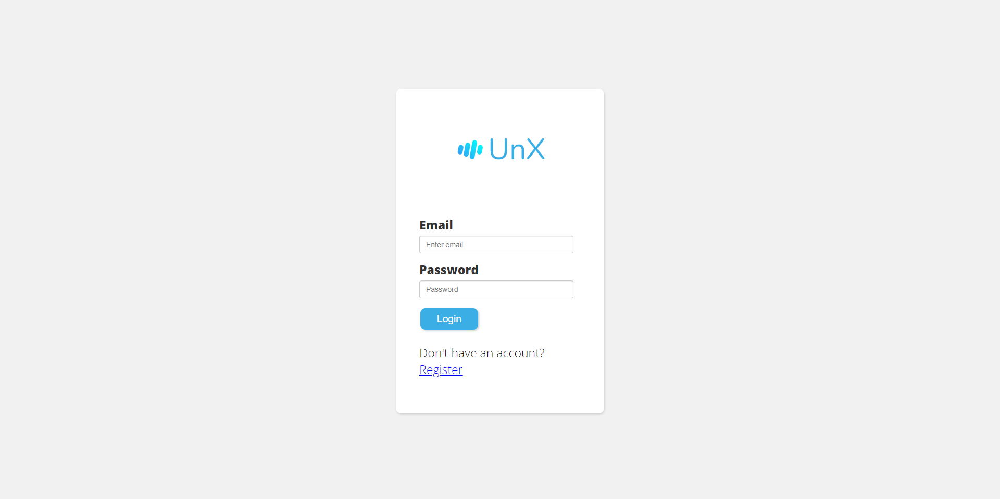

Scopul acestui document este de a prezenta proiectul Unemployment Explorer atat ca produs, audienta caruia de adreseaza si functionalitati de care dispune, cat si ca proiect din punct de vedere tehnic.
Publicul destinat acestui document sunt utilizatorii finali ai aplicatiei, dezvoltatorii si administratorii sistemului. Pentru a intelege functionalitatile aplicatiei nu sunt necesare cunostinte prealabile, insa pentru a intelege modul lor de implementare se recomanda un background in domeniul programarii web.
Scopul proiectului este de a oferi utilizatorilor posibilitatea de a analiza datele privind somajul din Romania folosind un sistem de selectie si filtrare multi-criteriala.
Aceasta aplicatie va oferi posibilitatea utilizatorilor sa vizualizeze datele despre situatia șomerilor din România si exportarea lor in mai multe moduri (SVG, CSV, PDF), pe baza unor filtre alese de ei, in crearea aplicatiei fiind folosite cunostinte dobandite la materia Tehnologii Web.
Utilizatorii vor putea sa vizualizeze statistici despre somaj precum rata somajului, numarul total de someri pe anumite perioade specificate, pe judete si pe alte criterii.
Datele vor putea fi vizualizate sub forma unor grafice cum ar fi pie chart, bar chart sau line chart. De asemenea exista si o harta interactiva a Romaniei pentru selectia judetelor in cadrul filtrarii.
Vizualizarea datelor se va putea face aplicand anumite filtre cum ar fi: judetul, luna, anul, genul, mediul, varsta, educatia si indemnizatia. La dorinta utilizatorului se vor putea face comparatii cum ar fi: femei vs barbati, urban vs rural, comparatia mai multor judete, luni sau ani s.a.
Datele vor putea fi descarcate ca CSV, SVG (format grafic) sau PDF (format grafic si/sau tabelar).
Pentru a utiliza aplicatia utilizatorii isi vor crea un cont si se vor putea autentifica daca au deja unul.
Utilizarea aplicatiei este conditionata de un abonament lunar, primele 7 zile fiind gratuite.
Utilizatorii sunt impartiti in urmatoarele 2 categorii: useri si administratori.
Aplicatia va putea fi folosita pe orice calculator, tableta sau telefon cu conditia ca acestea sa utilizeze un browser web unde va rula aplicatia si sa existe o conexiune la internet.
Pentru vizulizarea datelor sub forma de grafice se va utiliza Chart JS, libaria fiind incarcata cu ajutorul unui CDN.
HTML este limbajul de baza folosit pentru a crea paginile web. Acesta reprezinta structura paginii, adica elementele pe care le vom folosi pentru a afisa informatiile intr-un mod usor de inteles pentru utilizatorul obisnuit. Orice browser modern poate citi codul HTML si il poate interpreta fara a fi nevoie de alte programe.
CSS este limbajul folosit pentru a crea stilul paginilor web. Acesta reprezinta aspectul paginii, adica cum vor arata elementele din HTML. Este de asemenea un limbaj cu suport nativ in browser.
SVG este limbajul folosit pentru a crea imagini vectoriale. Acestea sunt imagini care pot fi scalate la orice dimensiune fara a pierde calitatea si pot fi randate in HTML.
JavaScript este limbajul folosit pentru a crea functionalitati interactive in paginile web. Acesta este folosit pentru a crea efecte de animatie, pentru a crea pagini care se incarca in mod asincron, pentru a crea pagini care se pot misca in functie de pozitia cursorului sau a tastaturii, etc. Un alt rol important este posibilitatea de a face apeluri asincrone catre server.
Node.js este un runtime pentru JavaScript. Acesta permite rularea codului JavaScript in afara browserului, pe server. Acest lucru permite dezvoltarea de aplicatii web care ruleaza pe server si care pot fi accesate de orice browser.
PostgreSQL este un sistem de baze de date relationale. Acesta permite stocarea datelor in tabele, care sunt definite de utilizator.
JWT (JSON Web Token) este un standard pentru autorizarea unui utilizator într-o aplicație web. Acesta este folosit pentru a crea tokeni care pot fi folosiți pentru a verifica identitatea utilizatorului.
HTTPS (HyperText Transfer Protocol Secure) este protocolul folosit pentru a comunica securizat intre client si server. Versiunea cea mai noua de HTTPS este HTTPS/3 (HTTP over QUIC) si pentru comunicarea sigura se foloseste protocolul TLS (Transport Layer Security) ajuns la versiunea 1.3.
GraphQL este un limbaj de interogare pentru API-uri. Acesta permite clientilor sa faca cereri catre server pentru a obtine datele dorite. GraphQL este un limbaj declarativ, ceea ce inseamna ca clientul specifica ce date doreste si nu cum acestea trebuie obtinute.
Datele despre somaj sunt extrase de pe site-ul www.data.gov.ro, iar acestea sunt stocate intr-un format CSV greu de utilizat in practica pentru diverse comparatii. Pentru a facilita utilizarea acestor date, acestea vor fi preluate si stocate intr-o baza relationala ce permite interogari complexe ce pot agrega datele in functie de anumite criterii.
Vizualizare cartografica
Vizualizare line graph
Vizualizare pie chart
Vizualizare bar chart
Dupa generarea graficelor, utilizatorul poate alege pe care dintre ele doreste sa le descarce si sub ce format, formatele puse la dispozitie fiind: PDF care poate contine atat reprezentarea grafica a graficelor cat si reprezentarea lor tabelara, SVG care va contine reprezentarea lor in grafica vectoriala si formatul CSV.
Nu este suficient sa afisam doar datele despre somaj, este important si modul in care este facilitata selectia criteriilor de filtrare. In acest scop avem un sistem in trei pasi:
Utilizatorii vor putea sa isi creeze conturi pe platforma noastra pentru a putea salva datele legate de graficele care le sunt de interes. Utilizatorii vor putea sa isi schimbe parola si datele personale in orice moment prin intermediul paginii de profil.
Panoul de administrare este destinat administratorilor platformei si va permite acestora vizualizarea tuturor utilizatorilor sortati dupa ultima lor activitate. Afisarea se face in maniera paginata si se poate alege numarul de utilizatori afisati pe pagina.
Utilizatorii vor putea sa marcheze graficele care le sunt de interes, iar acestea vor aparea pe pagina principala a acestora.
Aplicatia noastra va fi usor de folosit, chiar si de catre utilizatori neexperimentati. Acest lucru este incurajat prin interfata grafica simpla si intuitiva, si prin faptul ca sistemele de filtrare, cumparare de abonamente si salvare a datelor abstractizeaza procesele complexe.
Este important ca aplicatia noastra sa fie rapida si sa nu consume prea multe resurse nici pe partea de client, cat nici pe partea de server. Astfel ne pozitionam la mijloc prin alegerea unei randari partial client-side si partial server-side.
Comunicare are loc doar prin HTTPS si se va utiliza un sistem de refresh token pentru a asigura securitatea sesiunilor. Un JWT are o durata de viata de 5 minute, iar un refresh token de 30 de zile.